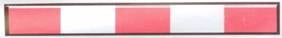

الشاخصات (الإشارات) المساعدة
و-1
حاجز قبل ملتقى سكة حديد : إذا كان الحاجز في حالة نزول أو في وضع أفقي ، فعلى عابر الطريق التوقف قبله
و-2

حاجز قبل مكان عمل أو لسد طريق من قِبل سلطة مخولة : الطريق مسدودة ، إذا لم يتم سد الطريق على عرضها ، فيجوز لعابر الطريق تجاوز الحاجز والاستمرار بحذر على طول مكان العمل، إذا تم سد كل الطريق ، فيجوز لعابر الطريق التقدم فقط بالاتجاه الذي يتم توجيهه إليه بواسطة شاخصة مناسبة .
و-3
أحجار الحافة مدهونة باللون الأسود والأبيض : لإظهار وإبراز الحافات أو الفواصل أو الجزر المبنية
و-7
أزرار مع أو بدون عاكس ضوء لإظهار وإبراز ترتيبات السير أو وسم في الطريق وحسب لون الوسم
و-8

حاجز لوقاية المارة : بإغلاق مساحة الشارع أمام المشاة ، لا يجوز للماشي دخول مساحة الطريق التي يسدها الحاجز
و-9

شاخصة تحذير وإرشاد في ملتقى تفرع طرق: على سائق المركبة أن يتمهل بالسير ويتابع سيره بالاتجاهات الموسومة باسهم على الشاخصة . في الأمكنة التي تنفذ فيها أشغال على الطريق تكون الألوان برتقالي - ابيض.
و-10
شاخصة تحذير وإرشاد في منعطف حاد : على سائق المركبة أن يتمهل بالسير ويتابع سيره بالاتجاه الموسوم باسهم على الشاخصة. في الأمكنة التي تنفذ فيها أشغال على الطريق تكون الألوان برتقالي - ابيض.